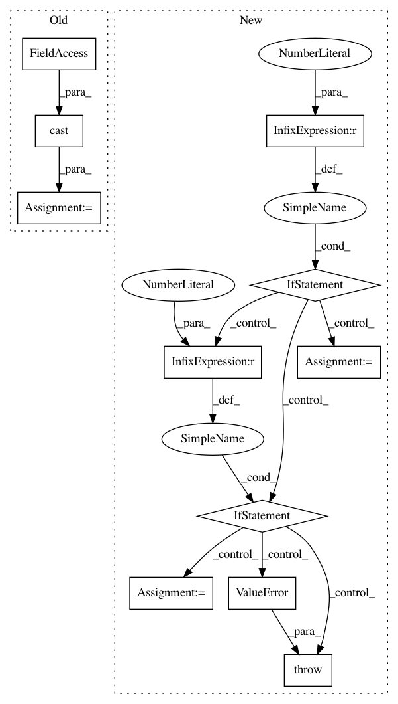

c86fbbe0c0bca22391d46177c8850d71c33b2e1d,geomstats/geometry/riemannian_metric.py,RiemannianMetric,inner_product,#RiemannianMetric#Any#Any#Any#,64
Before Change
tangent_vec_a = gs.tile(tangent_vec_a, [n_tiles_a, 1])
n_tiles_b = gs.divide(n_inner_prod, n_tangent_vec_b)
n_tiles_b = gs.cast(n_tiles_b, gs.int32)
tangent_vec_b = gs.tile(tangent_vec_b, [n_tiles_b, 1])
n_tiles_mat = gs.divide(n_inner_prod, n_mats)
n_tiles_mat = gs.cast(n_tiles_mat, gs.int32)
After Change
n_mats = gs.shape(inner_prod_mat)[0]
if n_tangent_vec_a != n_mats:
if n_tangent_vec_a == 1:
tangent_vec_a = gs.squeeze(tangent_vec_a, axis=0)
einsum_str_a = "j,njk->nk"
elif n_mats == 1:
inner_prod_mat = gs.squeeze(inner_prod_mat, axis=0)
einsum_str_a = "nj,jk->nk"
else:
raise ValueError("Shape mismatch for einsum.")
aux = gs.einsum("nj,njk->nk", tangent_vec_a, inner_prod_mat)
inner_prod = gs.einsum("nk,nk->n", aux, tangent_vec_b)
In pattern: SUPERPATTERN
Frequency: 3
Non-data size: 11
Instances
Project Name: geomstats/geomstats
Commit Name: c86fbbe0c0bca22391d46177c8850d71c33b2e1d
Time: 2020-01-17
Author: ninamio78@gmail.com
File Name: geomstats/geometry/riemannian_metric.py
Class Name: RiemannianMetric
Method Name: inner_product
Project Name: geomstats/geomstats
Commit Name: 072e5680310c1cefef7e520c16bb20e92da3016d
Time: 2020-01-17
Author: ninamio78@gmail.com
File Name: geomstats/geometry/hypersphere.py
Class Name: HypersphereMetric
Method Name: exp
Project Name: arraiy/torchgeometry
Commit Name: 6ee3f1b0d2a6ebadc9e2f664354594342ab0805d
Time: 2020-11-21
Author: justanhduc@users.noreply.github.com
File Name: kornia/augmentation/augmentation.py
Class Name: RandomSolarize
Method Name: __init__